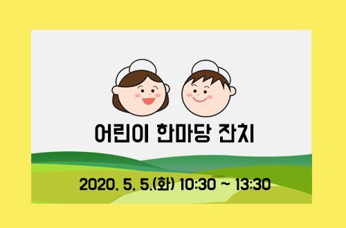

개장식
| 일시 : 2020.5.1(금) 09:00 |
| 장소 : 황소의 문 |
| 참석인원 : 500여명(초청100,군민 및 관강객 400) |
| 주요내용 : 주요 인사 소개, 개장테이프 커팅 등 |
개막식 행사
| 일시 : 2020.5.1(금) 19:00 |
| 장소 : 함평나비대축제 주무대 |
| 참석인원 : 3,000여명(초청 500, 관광객 2,500) |
| 주요내용 - 17:00 ~ 17:20 주요인사 접견 - 17:20 ~ 18:30 환영연(금호아시아나관 2층) - 18:00 ~ 19:00 식전공연 - 19:00 ~ 19:30 개막식 - 19:30 ~ 21:00 개막축하공연 |

제 22회 함평나비대축제 전국미술대회
| 일시 : 2020.5.2(토) 10:00~16:00 |
| 장소 : 함평나비대축제장 주무대 |
| 대상인 : 전국유치원, 초중고 재학생 |

제 41회 군민의 날 행사
| 일시 : 2020.5.4(월) 10:30 |
| 장소 : 함평나비대축제장 주무대 |
| 참석인원 : 기념식, 군민의 상 시상, 인재장학금 전달 및 공연 등 |

어린이 한마당 잔치
| 일시 : 2020.5.5(화) 10:30 ~ 13:30 |
| 장소 : 함평나비대축제장 주무대 |
| 주요내용 - 제1부: 신기하고 재미있는 특별공연(미술&벌룬, J Morning, 저글러 리쑨) - 제2부: 모범어린이표창 - 제3부: 관내 초등학교 어린이 한마당 잔치 - 제4부: 관광객과 함께하는 경연대회(훌라후프돌리기,왕제기차기,퀴즈대회 등) |
제 47회 어버이날 기념식
| 일시 : 2020.5.8(금) 10:00 ~ 12:00 |
| 장소 : 함평나비대축제장 주무대 |
| 주요내용 - 식전행사(10:00~11:00):나르다예술공연, 가수 축하공연 - 기념식(11:00~12:00):표창,기념사,축사 등 |

폐막식
| 일시 : 2020.5.10(금) 17:00 |
| 장소 : 함평나비대축제장 주무대 |
| 참석인원 : 행사관계자,관광객,군민 등 |
| 행사내용 : 폐막식 |
제 22회 나비대축제 전국 미술대회
| 일시 : 2020.5.2(토) 10:00~16:00 |
| 장소 : 엑스포공원 일원 |
| 참가대상 : 전국 유치원생, 초·중·고 재학생(1,000명) |
| 주제 : 나비와 함께하는 봄날의 여행 |
| 접수기간 : 2020.3.18~4.19 |
| 시상 : 문화체육관광부 등 6개 기관 5개 부문 31명 |

도전건강! 골든벨
| 운영기간 : 2020.5.6(수) 13:30~16:00 |
| 장소 : 나비대축제 야외 주무대 |
| 대상 : 80명(관내 초등학생 4~6학년) |
| 행사내용 : 골든벨을 통하여 흡연의 유해성과 올바른 건강지식전달 |

나비 축제 왔으면 함평을 알아야지!
| 운영기간 : 2020.5.7(목) 13:30~16:00 |
| 장소 : 나비대축제장 잔디광장 부스 |
| 대상 : 나비대축제 관람객 |
| 행사내용 : 함평과 관련된 5개 문항의 정답자에게 상품 증정 |
주제영상관
| 면적 : 2,996㎡ |
| 입장료 : 무료 |
| 관람시간 : 약 10분 소요 |
| 주요내용 -엑스포 공원사업소(2층) -하천홍보관,기념품점,수유실,종합상황실 운영 |
나비·곤충생태관
| 면적 : 1,858㎡ |
| 주요내용 -나비 생태 전시 및 방사: 호랑나비 외 6종 30천마리 -나비생태연출(3개소):알→애벌레→번데기→나비 성장과정 전시 -가족과 함께 나비날리기 체험 등 -나비 먹이 및 흡밀식물 생태 전시 등 |
친환경농업관
| 면적 :825㎡, 호박터널 30m |
| 주요내용 -농작물 호박, 채소류 과일류 등 110여종 식재 연출 -야생화 분화 50여종 100여점 전시 |
자연생태관
| 면적 : 1,980㎡ |
| 입장료 : 무료 |
| 관람시간 : 약 20분 소요 |
| 주요내용 -갯벌관찰장 설치: 함평만 서식 농게,칠게 등 10종 -자연생태 산경 및 폭포 조성 -야생화 30여종 식재 -조류 및 양봉관: 조류,목청연출,누드벌통,괴목벌집 -파충류·양서류 전시:15종(악어,자라,붉은귀거북,개구리 등) -폐류·갑각류 전시:10종 (말조개,다슬기,새우 등) -다람쥐 관찰장 연출 |
다육식물관
| 면적 : 2,475㎡ |
| 입장료 : 무료 |
| 관람시간 : 약 15분 소요 |
| 주요내용 -외국종 및 국내종 차별화 전시 2,375종 25,600본 -암석,다육식물을 이용한 다육 산경 조성 |
금호아시아나관
| 면적 : 1,471㎡ |
| 입장료 : 무료 |
| 관람시간 : 약 20분 소요 |
| 주요내용 -세계 각국의 나비·곤충 표본 전시: 450종 9,000마리 -천연기념물 및 한국고유종 민물고기 전시:민물고기 등 110여종 2,500여마리 |
중앙광장
| 운영기간 : 2019.5.1(금)~5.10(일) |
| 장소 : 함평나비대축제장 중앙광장 |
| 주요내용 -황금박쥐 조형물 중앙광장 전시 및 포토존 운영 |
곤충생태학교
| 면적 : 582㎡ |
| 입장료 : 무료(체험료:1,000원~5,000원) |
| 관람시간 : 약 10분 소요 |
| 주요내용 -곤충생태학습관: 나비,곤충 프리쇼 전시 -곤충문화체험관: 영상체험,나비체험 -만화체험관: 나비곤충캐릭터 만화 그리기 체험 -나비표본,곤충공예체험: 실제나비, 곤충표본제작 |
함평군립미술관
| 주요내용 -미디어아트,조각,설치미술,한국화 등 다양한 부문의 작품을 입체적으로 구성하여 전시 |
식품산업관
| 면적 : 630㎡ |
| 입장료 : 무료 |
| 관람시간 : 약 10분 소요 |
| 주요내용 -농특산품 전시·판매장 운영:35개 업체 100여종 -이색 농산물 전시 |
함평천지 문화유물 전시관
| 입장료 : 무료 |
| 관람시간 : 약 30분 소요 |
| 주요내용 - 모형 및 생활유물을 전시하여 부모님의 일생(유년시절,가정환경,사회생활 등) 디오라마 연출,테마전시관 등 각종 볼거리로 1960년대~1970년대 어머니의 일생을 생동감있게 묘사하였다. |
농·특산품 전시 및 판매장 운영
| 운영기간 : 2020.5.1(금)~5.10(일)/ 10일간 |
| 장소 : 식품산업관 630㎡ 및 잔디광장 일대 |
| 행사내용 :함평 관내 농업인 또는 생산단체가 직접 생산·가공한 친환경 농·특산물 판매 |
| 판매품목 -꿀,약초,된장,꾸지뽕,도라지,잡곡,떡,한과,나비쌀 등 |
양봉산물(벌집) 전시회 운영
| 운영기간 : 2020.5.1(금)~5.10(일)/ 10일간 |
| 장소 : 엑스포공원 자연생태관내 |
| 행사내용 :괴목벌집,퉁우리 벌집 등 전시 연출 |
함평천지한우 판매장 및 셀프식당 운영
| 장소 : 함평엑스포공원 식품산업관 옆 |
| 참여단체 : 함평축협,한우협회 함평군지부,고급육회,축사모 등 |
| 행사내용 - 함평 한우고기 판매 및 셀프식당 운영 |
5월 1일(금) - 주무대 및 축제장
| 시간 | 장소 | 공연·행사 내용 |
| 09:00~09:30 | 황소의 문 | 개막 테이프 커팅 |
| 09:30~10:30 | 축제장 | 축제장 관람 및 참여자 격려 |
| 10:30~11:00 | 미술관 | 군립미술관 특별전 개막식 |
| 13:30~14:00 | 축제장 | 야외 나비날리기 행사 |
| 14:00~15:00 | 주무대 | 추억의 쇼 유랑극단 |
| 17:50~18:50 | 주무대 | 개막식 식전공연 가무악극 "함평 천지에서 나빌레라" |
| 18:00~18:55 | 금호아시아나관 | 환영연 |
| 19:00~19:30 | 주무대 | 개막식 |
| 19:30~21:00 | 주무대 | 개막 축하쇼(장윤정 외) |
| 21:00~21:10 | 주무대 | 개막축하 불꽃놀이 |
5월 2일(토)
| 시간 | 장소 | 공연·행사 내용 |
| 10:00~16:00 | 축제장 | 제 22회 함평나비대축제 전국미술대회 |
| 11:00~12:00 | 주무대 | 세계음식문화공연 (우즈베키스탄 댄스 공연) |
| 11:30~12:00 | 축제장 | 야외 나비날리기 행사 |
| 13:30~14:00 | 축제장 | 야외 나비날리기 행사 |
| 14:00~15:00 | 주무대 | 추억의 쇼 유랑극단 |
| 15:00~16:00 | 주무대 앞 | 남도노동요 시연(전남무형문화제 제 5호) |
| 16:00~17:00 | 주무대 | 세계음식문화공연 (우즈베키스탄 댄스 공연) |
| 19:00~21:30 | 읍시가지 | 추억의 쇼 유랑극단 |
5월 3일(일)
| 시간 | 장소 | 공연·행사 내용 |
| 10:30~ | 팔각정 | 기산제 봉행 |
| 11:00~12:00 | 주무대 | 세계음식문화공연 (에콰도르 인티) |
| 13:30~14:00 | 축제장 | 야외 나비날리기 행사 |
| 14:00~15:00 | 주무대 | 추억의 쇼 유랑극단 |
| 15:00~16:00 | 주무대 앞 | 남도전통춤가락연구원 |
| 19:00~21:30 | 읍시가지 | 추억의 쇼 유랑극단 |
5월 4일(월)
| 시간 | 장소 | 공연·행사 내용 |
| 10:30~ | 팔각정 | 기산제 봉행 |
| 11:00~12:00 | 주무대 | 세계음식문화공연 (에콰도르 인티) |
| 13:30~14:00 | 축제장 | 야외 나비날리기 행사 |
| 14:00~15:00 | 주무대 | 추억의 쇼 유랑극단 |
| 15:00~16:00 | 주무대 앞 | 남도전통춤가락연구원 |
| 19:00~21:30 | 읍시가지 | 추억의 쇼 유랑극단 |
5월 5일(화)
| 시간 | 장소 | 공연·행사 내용 |
| 10:30~ | 팔각정 | 기산제 봉행 |
| 11:00~12:00 | 주무대 | 세계음식문화공연 (에콰도르 인티) |
| 13:30~14:00 | 축제장 | 야외 나비날리기 행사 |
| 14:00~15:00 | 주무대 | 추억의 쇼 유랑극단 |
| 15:00~16:00 | 주무대 앞 | 남도전통춤가락연구원 |
| 19:00~21:30 | 읍시가지 | 추억의 쇼 유랑극단 |
5월 6일(수)
| 시간 | 장소 | 공연·행사 내용 |
| 10:30~ | 팔각정 | 기산제 봉행 |
| 11:00~12:00 | 주무대 | 세계음식문화공연 (에콰도르 인티) |
| 13:30~14:00 | 축제장 | 야외 나비날리기 행사 |
| 14:00~15:00 | 주무대 | 추억의 쇼 유랑극단 |
| 15:00~16:00 | 주무대 앞 | 남도전통춤가락연구원 |
| 19:00~21:30 | 읍시가지 | 추억의 쇼 유랑극단 |
5월 7일(목)
| 시간 | 장소 | 공연·행사 내용 |
| 10:30~ | 팔각정 | 기산제 봉행 |
| 11:00~12:00 | 주무대 | 세계음식문화공연 (에콰도르 인티) |
| 13:30~14:00 | 축제장 | 야외 나비날리기 행사 |
| 14:00~15:00 | 주무대 | 추억의 쇼 유랑극단 |
| 15:00~16:00 | 주무대 앞 | 남도전통춤가락연구원 |
| 19:00~21:30 | 읍시가지 | 추억의 쇼 유랑극단 |
5월 8일(금)
| 시간 | 장소 | 공연·행사 내용 |
| 10:30~ | 팔각정 | 기산제 봉행 |
| 11:00~12:00 | 주무대 | 세계음식문화공연 (에콰도르 인티) |
| 13:30~14:00 | 축제장 | 야외 나비날리기 행사 |
| 14:00~15:00 | 주무대 | 추억의 쇼 유랑극단 |
| 15:00~16:00 | 주무대 앞 | 남도전통춤가락연구원 |
| 19:00~21:30 | 읍시가지 | 추억의 쇼 유랑극단 |
5월 9일(토)
| 시간 | 장소 | 공연·행사 내용 |
| 10:30~ | 팔각정 | 기산제 봉행 |
| 11:00~12:00 | 주무대 | 세계음식문화공연 (에콰도르 인티) |
| 13:30~14:00 | 축제장 | 야외 나비날리기 행사 |
| 14:00~15:00 | 주무대 | 추억의 쇼 유랑극단 |
| 15:00~16:00 | 주무대 앞 | 남도전통춤가락연구원 |
| 19:00~21:30 | 읍시가지 | 추억의 쇼 유랑극단 |
5월 10일(일)
| 시간 | 장소 | 공연·행사 내용 |
| 10:00~11:00 | 주무대 | 추억의 쇼 유랑극단(미술,연극 등) |
| 11:00~12:00 | 주무대 | 세계음식문화공연 (에콰도르 인티) |
| 13:30~14:00 | 축제장 | 야외 나비날리기 행사 |
| 14:00~15:00 | 주무대 | 한국연예예술인 총연합회 함평지회(나비야 놀자!) |
| 18:00~ | 읍시가지 | 폐막 행사 |
| 19:00~21:30 | 읍시가지 | 추억의 쇼 유랑극단 |
상설공연
| 공연명 | 장소 |
| 추억의 쇼 유랑극단 | 주간: 함평나비대축제 주무대 |
| 야간(19:00~21:30):읍시가지 | |
| 마리아치라틴(멕시코) | 함평나비대축제 주무대 및 축제장 |
| 인티(에콰도르) | 잔디광장 및 세계음식문화체험거리 |
야외 나비날리기 행사
장 소 : 중앙광장 주변, 중앙광장 옆 하천변
시 간 : 평일 13시 30분, 주말 11시30분, 13시 30분
접 수 : 현장에서 선착순 신청
문의전화 : 061-320-1784
농경사회문화 체험
장 소 : 엑스포습지공원 내
체험내용 : 용두레,무자위 등 수리 농기구 전시,체험
- 기타 전통 손 모내기 체험장 운영 등
미꾸라지 잡기 체험
장 소 : 함평엑스포공원 생태습지 내
편의시설 : 간이샤워장, 탈의실, 휴게소 등
체험료 : 1000원
체험내용 : 직접잡은 미꾸라지 가져가기
동물농장, 젖소목장 나들이 체험
장 소 : 엑스포공원 생태습지 내
체험료 : 무료
체험내용 : 직접 가축에게 먹이주기, 송아지 우유 먹이기,
건초먹이기, 손착유 체험
사랑 앵무새 먹이주기 체험
장 소 : 엑스포공원 내(주제영상관 옆)
체험료 : 2000원
체험내용 : 부모와 함께하는 앵무새 먹이주기 체험
나비곤충 퍼즐 만들기
장 소 : 나비대축제장 잔디광장 부스
체험료 : 2000원
체험내용 : 압화 목걸이, 나비곤충 입체퍼즐 체험
전통민속놀이 체험
장 소 : 나비대축제장 잔디광장 부스
체험료 : 무료
체험내용 : 맷돌, 어린이지게, 신발던지기 등 전통민속놀이 체험